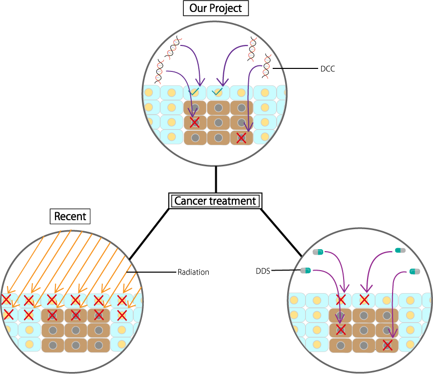

Background
シグナル伝達系
細胞の外から得た刺激(リガンド)を細胞内で生化学的情報として変換し、これが別の刺激を誘導し伝達していく。
情報を伝達する役割はタンパク質が担っている。最後は核に伝達されて分裂や消滅など細胞が反応する。この情報が伝わる経路のことをシグナル伝達系と呼ぶ。私たちはDNAナノ構造によってこのシグナル伝達系のタンパク質を繋ぐ橋となる新しいシステムを開発することを目指した。
このシステムをDP gate bridgeと名付けた。
{kind=link}
Problem
私たちはDP gate bridgeになりうる例を考えた。DNAをシグナル伝達系のタンパク質そのものに作用させるには、タンパク質同士の結合部位への阻害などのタンパク質の構造に着目せねばならない。
しかし、DNA折り紙といったDNAナノ構造の技術をもってしても、タンパク質へ高い適合性を持った構造物を生成するのはたやすくない。
また、それらのタンパク質への作用させるためにmRNAに着目する方法もある。
ｍRNAはタンパク質の設計図であり、タンパク発現量や発現時間などを調整する物質であるとされている。つまり、DNAをmRNAに何らかの形で作用し、mRNAの阻害が出来れば、シグナル伝達系を制御しうることになる。
しかし、mRNAは細胞内で精密に管理されており、mRNAの動きや、mRNAの発生時間を捉えることは非常に難しい。
Our Project
そこで、私たちはシグナル伝達系の動きを詳細に追ってみた。シグナル伝達系のタンパク質間の働きにはリン酸化が重要な機構として働いている。 タンパク質のリン酸化はタンパク質間をつなぐ重要な伝達機能を果たしており、タンパク質のリン酸化にはATPの供給が不可欠である。私たちはこの仕組みに注目し、細胞内のATP量を調整すれば結果的に、シグナル伝達系を制御できるのではないかと考えた。
私たちはこのATPを介したタンパク質制御をATP Controllerと名付け、DP gate bridgeの一つになりうると考えた。このプロジェクトの最終目標はDP gate bridgeにおける新しいシステムを提示することである。
ATP Controllerを完成させることである。ATP controllerの完成させるためにするべきことは、DNAとATPの作用方法、及びATP量の調整する機構を提案し、その妥当性と実現性を立証、実験する事である。
Our Project
We propose a new cancer treatment method that overcomes the current cancer treatment problems. The method proposed by us aims at direct administration to cells like DDS. The system we propose is not a premise for drug use like the conventional cancer
treatment methods, but it causes death of cancer cells only by reaction of DNA. We named this system DCC (DNA Cancer Cancell). With current technology, as mentioned earlier it will be difficult to target only cancer cells completely. However, unlike
medication, DCC has little effect on healthy cells.

{kind=link}
Figure 2 : Our Project
We focused attention on ATP (adenosine triphosphate) which is energy for cell's life activity. ATP is synthesized in mitochondria, but when mitochondrial abnormality occurs, the cell synthesizes ATP in a system called glycolysis system. After that,
when there is oxygen, many ATPs are synthesized with mitochondria[2]. Even in the absence of oxygen, it is possible to synthesize a small amount of ATP, but lactic acid is produced at the same time(Click About ATP for more details). Here, when mitochondria is malfunctioning, it continues to produce lactic acid at the same time as a small amount of ATP, regardless of the presence or absence of oxygen. The cell becomes weak and leads to death by continuing
to produce lactic acid, but in rare cases it will continue to live with carbohydrate as food. It becomes a cancer cell[3]. Cancer cells continue to live with small amounts of ATP obtained from carbohydrates as energy. Therefore, we thought that shutting
down a small amount of ATP completely stops intracellular signal transduction and is able to forcefully direct it to cell death. ATP is present in abundance in normal cells, but only in small
amounts in cancer cells. The reason why cancer cell has much less ATP than normal cells is they don’t use the mitochondria which generates the most ATP. We thought that it is possible to make cancer cells only die and not to affect normal cells by utilizing its characteristics. In summery, the reason we focused on ATP is because we think we can use ATP which is a power source of life activity to stop cells and it is useful that the amount of ATP is very different from cancer cells and normal cells. It becomes ON state absorbing ATP in the cell at the timing when the Input is input. After that,
it turns OFF automatically when the cancer cell dies. This will minimize the burden on the cells even when our system is moving within normal cells.
{kind=link}
Figure 3 : Image of Our Project
Objective
Program
Merit
The merit of DCC proposed by us is as follows.
First, the effect on normal cells other than cancer cells, compared to conventional cancer treatment it is less.
Conventional cancer treatments are generally based on radiation or anticancer drugs.
However, these methods seriously damage normal cells other than cancer cells.
DCC we developed this time deals damage only to cancer cells and has little effect on normal cells we will not give it.
Another merit is that we do not use enzymes in DNA circuit of DCC.
T7 polymerase enzyme is used to absorb ATP, but in the design of DNA circuits we do not use enzymes. For details, please refer to DNA Design.
By not using the enzyme, it can be expected to be used in vivo.